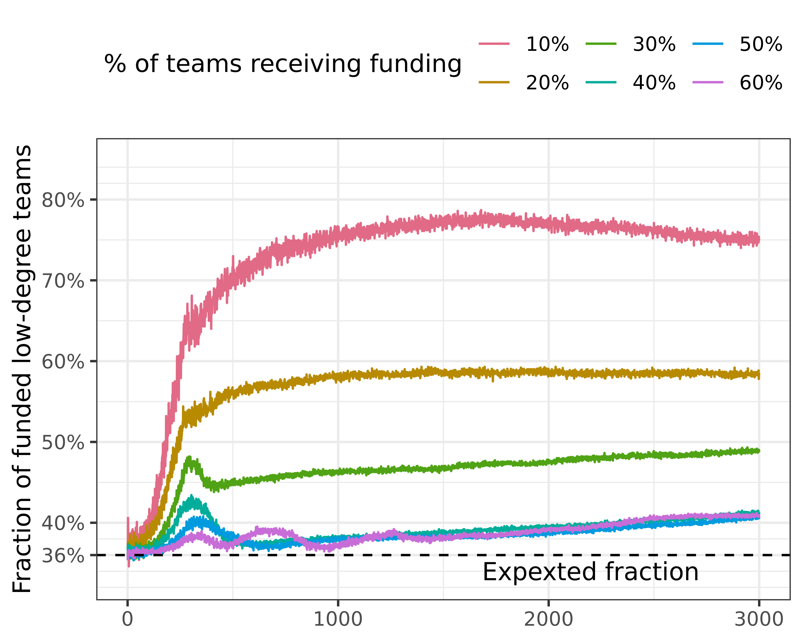
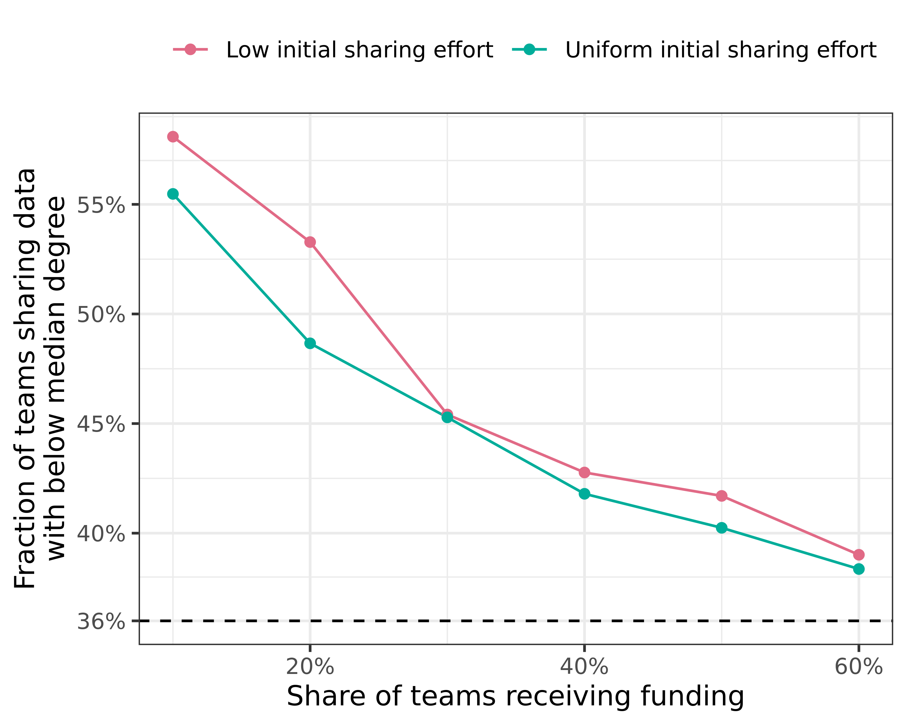

Analysis of funder selectivity: individual level data
Research questions:
Are always the same teams receiving funding?
Are those that are being funded also those that share data?
Are those that share data / receive funding more or less central in the network?
Are always the same teams receiving funding?
Code
# we did not store whether a given team was funded, and it is quite # time-consuming to re-run everything. We can compute this (with quite some# effort) by checking if their total funding increased or not.# check funding progressfunding_status <- fragmented %>%filter(sharingincentive == .4,# we can restrict this to steps above 2000, since we are interested in# the equilibrium state here step >=2000)
Code
# lagged model for fundingregression_results <- funding_status %>%# it also fails currently, no idea whyml_logistic_regression(funded ~ initial_resources + funded_lag)
Code
print(regression_results)
There seems to be a massive effect of the lagged funding status, if we take a global look at all funding incentive settings.
The correlation between current and previous funding status is very high - there seems to be almost complete path dependency, once the simulation has entered the equilibrium state.
Interestingly, the correlation with initial resources is much lower. For uniform initial utility, it is relatively low across all funding selectivity settings.
For low initial utility, this is not true, and there is actually a negative correlation. This lends credence to our initial hypothesis: teams with initially higher resources (presumably, to be confirmed below) share less data, and thus are less successful under the incentive regime.
No network
Code
funding_status_no_network <- no_network %>%filter(sharingincentive == .4,# we can restrict this to steps above 2000, since we are interested in# the equilibrium state here step >=2000)
Code
regression_results <- funding_status_no_network %>%# it also fails currently, no idea whyml_logistic_regression(funded ~ initial_resources + funded_lag)
Code
print(regression_results)
With the baseline without a network, there is equally a strong influence of path dependency. Initial resources have a slightly stronger role than in the case of the fragmented network.
Correlations for funding lag are similarly very high. However, behaviour is different between max-initial-utility, comparing to the case of the fragmented network. Here, correlations are higher for maxinitalutility = 4, but lower otherwise.
These correlations are stronger, i.e., more positive, as indicated by the regression: without networks, initial resources play a stronger role in who gets funded, especially if funding is very selective.
To our initial question for the difference between utility settings: path dependency is much lower for low initial utility. There is even a slight negative correlation between initial resources and funding: initially lower-resourced teams are funded more than those with higher initial resources, simply because they start sharing data. If utility is uniform, initial resources play a stronger role - there is more path dependency.
Are those that are being funded also those that share data?
Generally speaking, those that are being funded are also those that share data, in this instance. The correlation is stronger for less selective regimes. What does this indicate? Maybe the broader reach of the funding agency, if many teams are being funded? But wouldn’t it be the case that if funding is more selective, only those that are funded also share data, because it is too costly otherwise? But maybe it is the opposite: if funding is very selective, not many teams can afford to share data, and thus not many do. If funding is less selective, more teams share data, and thus, generally, those being funded are also more often those which share data. Does this make sense?
The correlation between sharing, and the shared lag (whether teams keep sharing data) is also quite high, and the graph looks very similar to the one right above. This implies that there is path dependency around sharing, where teams share data and receive funding, while others do neither.
Again, we see that the correlation between funding and sharing seems to be largely driven by previous sharing - the correlations between sharing and sharing lag are essentially the same, just slightly lower.
We can thus conclude, that generally speaking, those who share data are also those who receive funding. However, in the case of no networks, this correlation is weaker, and especially weaker in case of low initial utility.
Are those that share data / receive funding more or less central in the network?
HIGHLY INTERESTING OBSERVATION: in the fragmented network, it is mostly those teams which are not well-connected that keep sharing data (in line with the general finding that no network leads to more sharing than having a network. Those that are closer to having no network (low degree) are thus more likely to share). Is it then also those that receive more funding? Need to compare with centrality measures.
This might be the reason, why the means that we show are much smoother for the fragmented network, compared to the clustered, and especially the random network: in the fragmented network, the types of nodes sharing data are quite similar across runs, because there is a strong difference in degree between the nodes. In the clustered, and more so in the random network, there are not so big differences in degree, and thus there is more variability in who shares.
Correlations are negative, but not very strong. The negative correlation means that teams with a lower degree share more. This is apparently the case. The correlation is weak, since not all low-degree teams share data, simply because not all teams are being funded. Once more teams are being funded, of course also higher-degree teams are being funded, because there are only so few low-degree teams.
How can we show this better? We can compute what the fraction of funded teams which are low-degree is.
Code
# compute the share of teams being funded that are low-degreelow_degree_hypothesis <- funding_status %>%left_join(fragmented_centrality, by ="who") %>%group_by(maxinitialutility, fundedshare, run_number, step, funded) %>%count(is_low_degree) %>%mutate(fraction = n /sum(n)) %>%filter(funded, is_low_degree) %>%group_by(maxinitialutility, fundedshare) %>%summarise(mean_frac_low_degree_funded =mean(fraction)) %>%collect()
Warning: Missing values are always removed in SQL aggregation functions.
Use `na.rm = TRUE` to silence this warning
This warning is displayed once every 8 hours.
`summarise()` has grouped output by "maxinitialutility". You can override using
the `.groups` argument.
Code
# what is the actual fraction of low degree teams?true_fraction <- fragmented_centrality_local %>%count(is_low_degree) %>%mutate(n = n /100) %>%filter(is_low_degree) %>%pull(n)low_degree_hypothesis %>%ggplot(aes(fundedshare, mean_frac_low_degree_funded, colour =as.factor(maxinitialutility))) +geom_line() +geom_point() +geom_hline(yintercept = true_fraction, linetype =2) +scale_y_continuous(breaks =c(true_fraction, seq(.4, to = .55, by = .05)))

Figure 1: Representation of low-degree teams among funded teams. The dashed line indicates the share of teams with low degree in the sample. Values above the dashed line thus signal an over-representation of low-degree teams.
We see that for high selectivity (funded share is low), low-degree teams are over-represented among the funded teams. The analytic approach mirrors that of a Chisquare test.
The same with sharing
Code
# compute the share of teams sharing data that are low-degreelow_degree_hypothesis_sharing <- funding_status %>%left_join(fragmented_centrality, by ="who") %>%group_by(maxinitialutility, fundedshare, run_number, step, shared_data) %>%count(is_low_degree) %>%mutate(fraction = n /sum(n)) %>%filter(shared_data, is_low_degree) %>%group_by(maxinitialutility, fundedshare) %>%summarise(mean_frac_low_degree_sharing =mean(fraction)) %>%collect()
`summarise()` has grouped output by "maxinitialutility". You can override using
the `.groups` argument.
Code
# what is the actual fraction of low degree teams?true_fraction <- fragmented_centrality_local %>%count(is_low_degree) %>%mutate(n = n /100) %>%filter(is_low_degree) %>%pull(n)low_degree_hypothesis_sharing %>%ggplot(aes(fundedshare, mean_frac_low_degree_sharing, colour =as.factor(maxinitialutility))) +geom_line() +geom_point() +geom_hline(yintercept = true_fraction, linetype =2) +scale_y_continuous(breaks =c(true_fraction, seq(.4, to = .55, by = .05)))

Figure 2: Representation of low-degree teams among teams sharing data. The dashed line indicates the share of teams with low degree in the sample. Values above the dashed line thus signal an over-representation of low-degree teams.
Code
# THE CODE BELOW DOES NOT WORK CURRENTLY# we cannot do a grouped chisquare in spark directly, therefore using spark_applytest_fun <-function(df) { res <-chisq.test(df$funded, df$is_low_degree) broom::tidy(res)}chisquare_res <- funding_status %>%# head(1000) %>%left_join(fragmented_centrality, by ="who") %>%spark_apply(test_fun, columns =c("maxinitialutility", "fundedshare", "run_number", "step")) %>%group_by(maxinitialutility, fundedshare) %>%summarise(mean_statistic =mean(statistic),mean_p =mean(p.value)) %>%collect()# We could also run it like this, but it does not do grouped tests, only executes on everything# group_by(maxinitialutility, fundedshare, run_number, step) %>% # mutate(is_low_degree = as.character(is_low_degree),# funded = as.character(funded)) %>% # ml_chisquare_test(features = "is_low_degree", label = "funded")